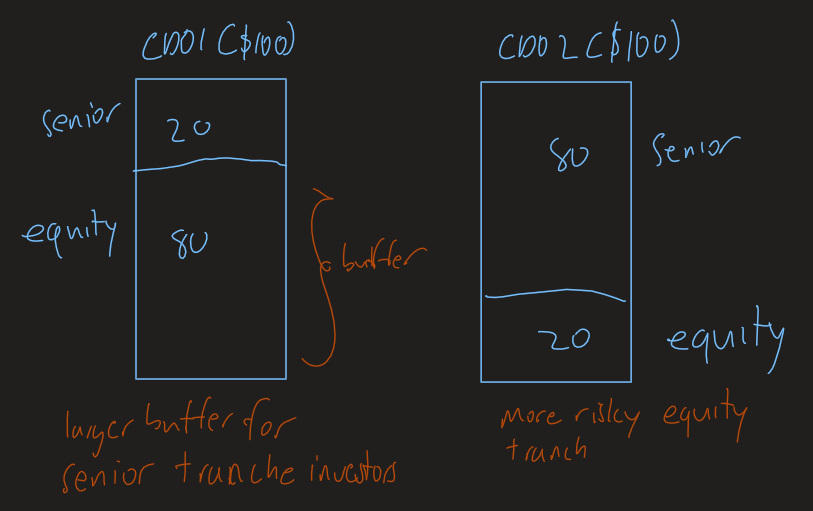
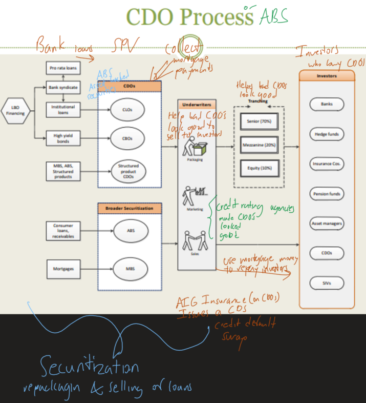

A mortgage is a loan to purchase a home, land, or other real property. They are a type of collateralized loan meaning you have put post collateral (your house or property) and pay a down payment to get a mortgage. In case of default, the house is foreclosed and is collected by the bank. In 2004, the value of mortgages were over $10 trillion (86% of GDP). Of all mortgages, 77% of them are home mortgages.
There is a moral hazard problem of people not paying your mortgage payments, so down payments are required so they have "skin in the game".
Banks figured out a way to stop caring about the quality of the borrowers (sub prime mortgages) because they started to transfer the mortgages to a SPV (Special Purpose Vehicle).
Securitization is the process of packaging and selling of loans. This process requires an ABS (Asset Backed Security) such as a loan which is then repacked (for example into a CDO), and then sold to investors.
Here is a picture of a bank, a special purpose vehicle, and the investors who buy ABS'. The balance sheets are also shown in this picture. Here you can see the bank transferring a loan to an SPV which then sells it as an ABS to investors. Banks no longer have to care about the quality of the loan they are selling since the SPV is treated as a separate entity as them.
Here SPVs will pay investors equally based on a weight of their initial investment. The Issuer collects monthly payments from a pool of mortgages and then passes on a proportionate share of the collected principal and interest to bondholders.
Examples are:
Collateralized = Traunching
Here the SPV will split the pool of mortgages by tranches and prioritize payments back to investors by tranche. The first tranche to be paid is called the Senior Tranche while the last to get paid is the Equity Tranche. The lower the prioritization, the higher yield the investor expects to be paid.
Here there is a re-distribution risk because if the SPV doesn't received enough money from the mortgage pool to pay back investors, the lowest priority tranche will not be paid.
The larger the equity tranche is, the more buffer and protection the CDO's senior tranche will have.
Asset Backed Commercial Papers work like ABS but instead of a SPV, a SIV (Structured Investment Vehicle) issues commercial paper to purchase the bank loans. SIV's are obligated to pay back investors even if they do not generate sufficient cash flows from the bank loans (mortgages).
When the cash flows exceed costs, the SIV gets to keep the spread. Due to this set up, SIV's have liquidity risk and exposure to runs.
Investors typically prefer CDO's with large equity tranches because they provide a buffer so they can receive payments if they own the senior tranche. However senior tranches are worth more because of their low risk nature, so they can be sold to investors at high prices.
In this example, investors would prefer CDO #1, but SPV's prefer selling CDO #2 (with a large senior tranche/higher price) which creates a conflict of interest. Underwriters for these CDO's would mislead investors about tranches so they could sell CDO's that followed CDO #2 even though investors thought they were buying CDO #1.
CDO's can be repackaged into more CDO's which makes them complicated to investors and easy to mislead.
Finally here is a wrap up of the CDO process.
